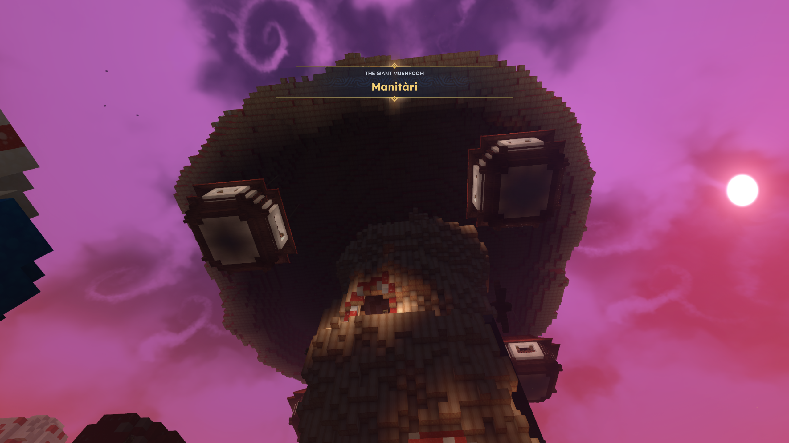
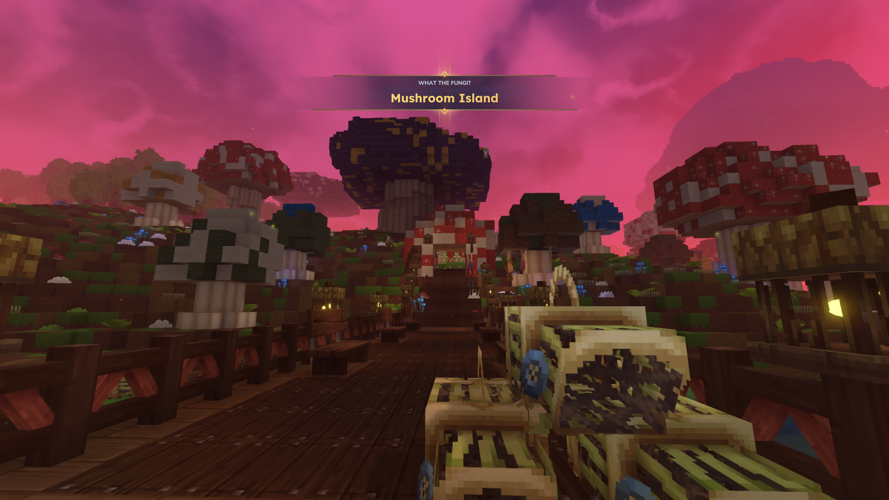
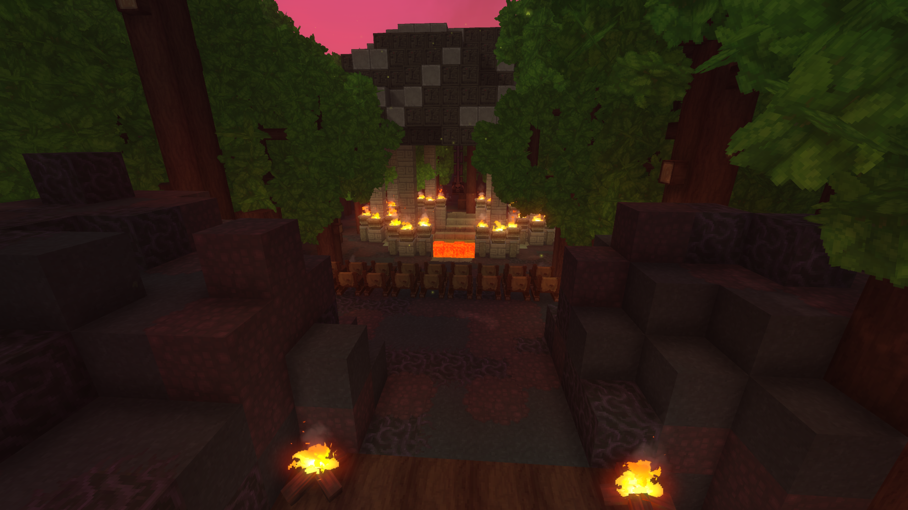
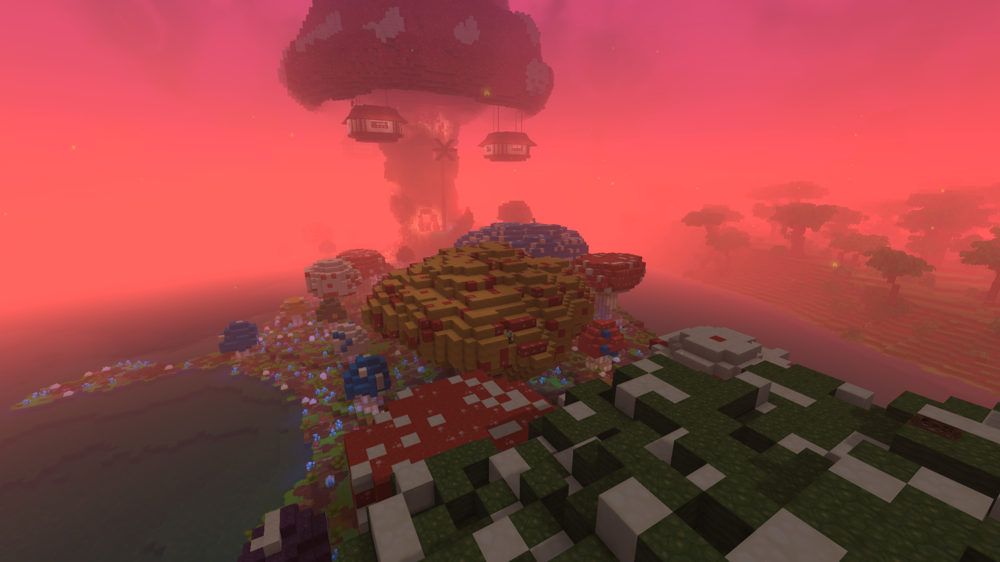
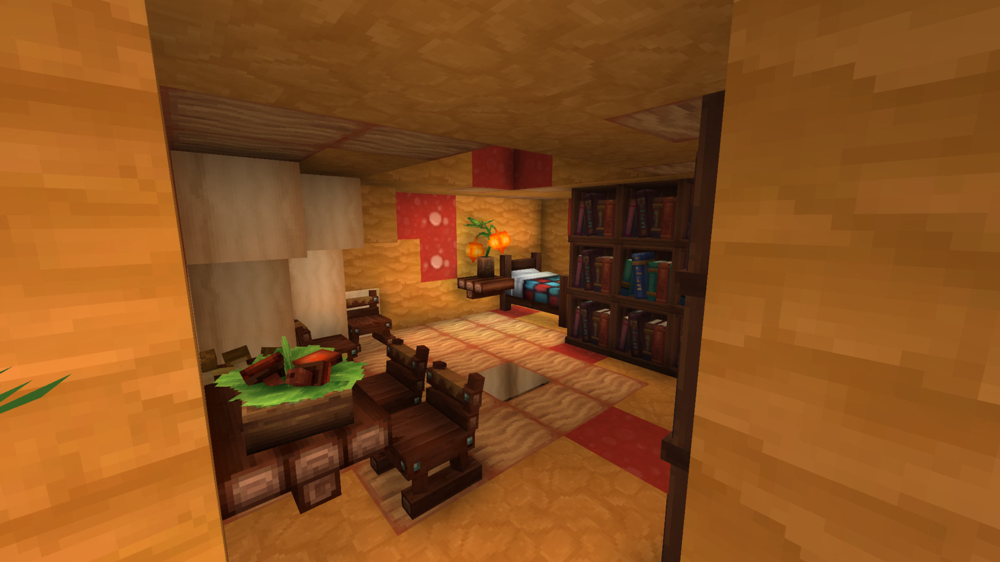
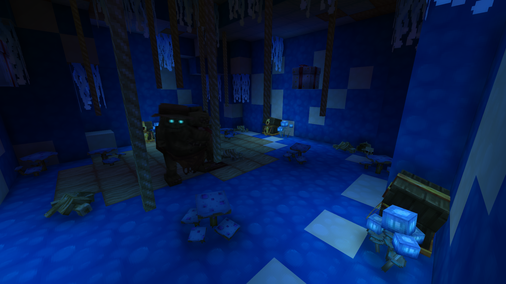
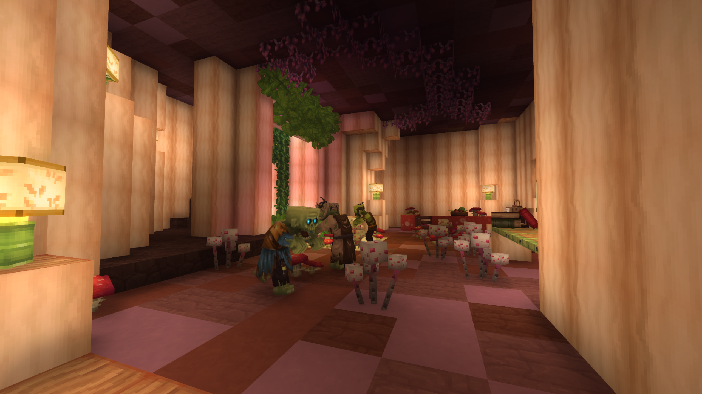
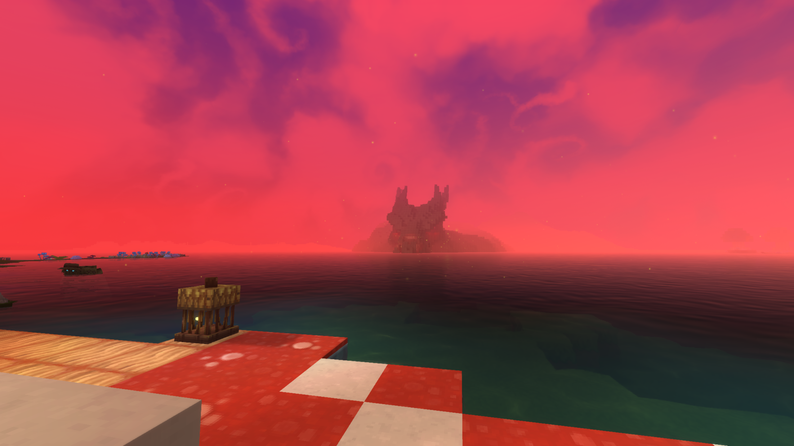

Sprouting like a colossal, red-and-white spotted canopy over the surreal shores of Mushroom Island, Manitári stands as the ultimate monument to a fallen paradise—a giant, hollowed-out mushroom that once cradled life, but now harbors an immortal nightmare.
Manitári

| Location Information | |
|---|---|
| Coordinates | X: 617, Z: 787 |
| Area Type | Rural Ruins |
| Mob Threat | Very High |
| Bandit Threat | High |
| Number of Chests | 19 |
| Water Source | Yes |
| Clean Water Source | No |
| Fireplace | No |
| Chef's Stove | No |
| Workbench | No |
| Available Loot | ||
|---|---|---|
| 🍎 Food | ✗ | |
| 🥛 Civilian | Tier 1 | ✗ | |
| ✂️ Civilian | Tier 2 | ✗ | |
| 🛠️ Civilian | Tier 3 | 4 | |
| 🛡️ Military | Tier 1 | ✗ | |
| ⚔️ Military | Tier 2 | 4 | |
| 🏹 Military | Tier 3 | 11 | |
| 🌟 Legendary | ✗ | |
Lore
Sprouting like a colossal, red-and-white spotted canopy over the surreal shores of Mushroom Island, Manitári stands as the ultimate monument to a fallen paradise—a giant, hollowed-out mushroom that once cradled life, but now harbors an immortal nightmare.
The Canopy of the Kweebecs
For generations, the gentle, wood-kin Kweebecs called the bizarre, spore-dusted fields of Mushroom Island their home. Seeking shelter from the elements, they carved intricate, cozy living quarters directly into the stalks of the island's largest fungi. Manitári, the grandest of them all, served as the heart of their peaceful community.
To maximize their safety and distance themselves from the damp forest floor, the Kweebecs constructed a series of cozy, circular floating cabins suspended directly from the underside of Manitári's massive red cap. Hanging high in the air like wooden lanterns, these floating pods served as the most secure and coveted residential quarters in the village.
But even the isolated, high-altitude cabins of Mushroom Island could not escape the rot creeping across the world. When the horrific undead plague drifted across the sea, its corruptive, maddening influence seeped deep into the island's soil, spore clouds, and the very wood of their hanging homes.
The Descent into Madness
The transformation was tragic. Driven utterly insane by the virulent blight, the once-peaceful Kweebecs turned to dark, desperate rituals to appease the encroaching death. On the eastern shore of the island, they constructed a crude, terrifying sacrificial pit—a grim altar where they offered up their own to the creeping rot. The cheerful songs of the forest were permanently replaced by the frantic whispers of a dying, mad tribe, until nothing but hollow silence remained.
Anatomy of the Spore Island
- The colossal, towering cap of Manitári, dominating the center of the island and holding the tribe's most sacred relics.
- The unique floating cabins, suspended precariously in mid-air beneath the mushroom's rim.
- The abandoned Kweebec dwellings, carved directly into the thick, fleshy stalks of the surrounding giant mushrooms.
- The grim sacrificial pit on the eastern shore, still staining the fungal soil with the remnants of the tribe's final, desperate hours.
The Aberrant Guardian
For adventurers brave enough to scale the slippery, vertical interior of Manitári, the ultimate test awaits at the very top of the giant mushroom's cap. Guarding the Kweebecs' most valuable treasure chests is an aberrant zombie—a monstrous, mutated horror fueled by the concentrated necrotic rot of the island.
What makes this creature truly terrifying is its unnatural resilience. When defeated, the aberrant beast does not truly die; instead, its corrupted biology causes it to recover and stand back up almost instantly, making it practically unkillable.
Present Day
Manitári is a highly unique challenge for daring explorers. The lower structures and the suspended, floating cabins offer excellent entry-level looting spots where players can find old Kweebec tools, specialized fungal ingredients, and survival gear left behind when the village fell.
However, the ultimate prize sits at the very top of the central stalk. Because the guardian cannot be permanently put down, brute force alone will not secure the treasure. To claim the chests hidden in the high canopy, players must coordinate a precise strike to temporarily incapacitate the zombie, utilizing the incredibly small time window of its recovery to snatch the rare loot before it rises once more, twice as angry.
Step onto the pale shores of Mushroom Island and look up at the silent, floating cabins of Manitári. Keep your weapons drawn and your movements swift—for in the high cap of the world's greatest mushroom, you have only seconds to claim your prize before the immortal warden wakes again.
Gallery







